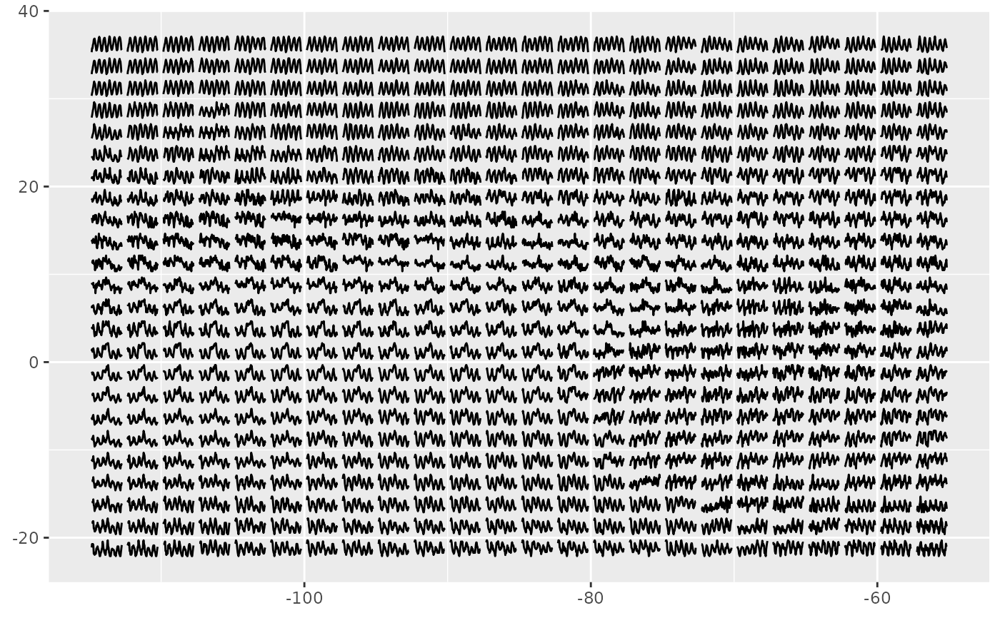
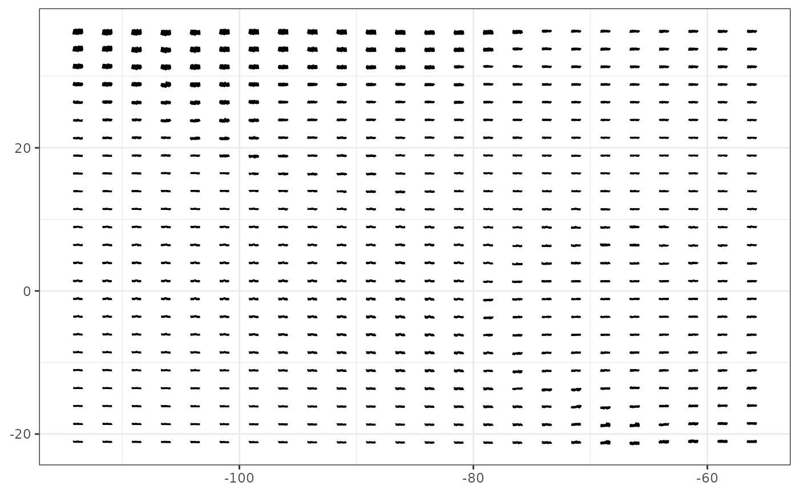
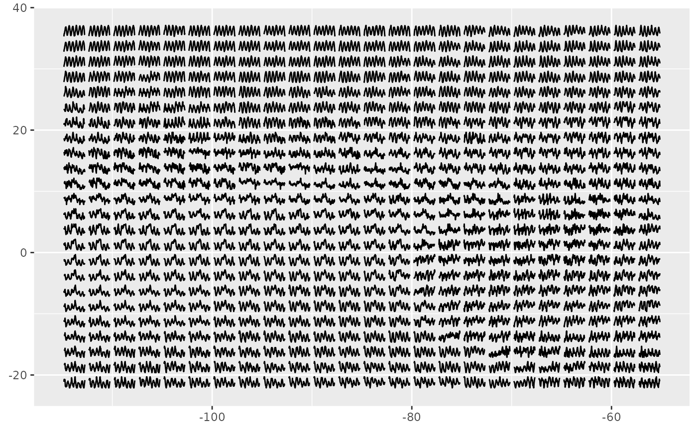
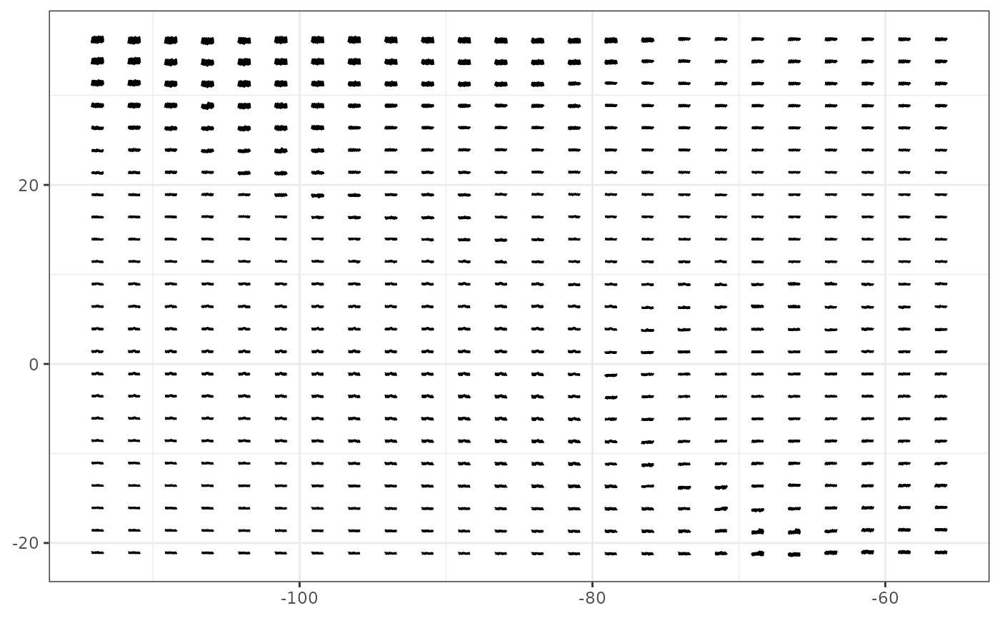

Create glyph map with ggplot2
glyph.RdCreate glyph map with ggplot2
geom_glyph(
mapping = NULL,
data = NULL,
stat = "identity",
position = "identity",
...,
x_major = NULL,
x_minor = NULL,
y_major = NULL,
y_minor = NULL,
x_scale = "identity",
y_scale = "identity",
polar = FALSE,
width = ggplot2::rel(2.1),
height = ggplot2::rel(1.8),
global_rescale = TRUE,
show.legend = NA,
inherit.aes = TRUE
)
geom_glyph_line(
mapping = NULL,
data = NULL,
stat = "identity",
position = "identity",
...,
x_major = NULL,
x_minor = NULL,
y_major = NULL,
y_minor = NULL,
polar = FALSE,
width = ggplot2::rel(2.1),
height = ggplot2::rel(2.1),
show.legend = NA,
inherit.aes = TRUE
)
geom_glyph_box(
mapping = NULL,
data = NULL,
stat = "identity",
position = "identity",
...,
x_major = NULL,
x_minor = NULL,
y_major = NULL,
y_minor = NULL,
polar = FALSE,
width = ggplot2::rel(2.1),
height = ggplot2::rel(2.1),
show.legend = NA,
inherit.aes = TRUE
)Arguments
- mapping
Set of aesthetic mappings created by
aes()oraes_(). If specified andinherit.aes = TRUE(the default), it is combined with the default mapping at the top level of the plot. You must supplymappingif there is no plot mapping.- data
The data to be displayed in this layer. There are three options:
If
NULL, the default, the data is inherited from the plot data as specified in the call toggplot().A
data.frame, or other object, will override the plot data. All objects will be fortified to produce a data frame. Seefortify()for which variables will be created.A
functionwill be called with a single argument, the plot data. The return value must be adata.frame, and will be used as the layer data. Afunctioncan be created from aformula(e.g.~ head(.x, 10)).- stat
The statistical transformation to use on the data for this layer, as a string.
- position
Position adjustment, either as a string, or the result of a call to a position adjustment function.
- ...
Other arguments passed on to
layer(). These are often aesthetics, used to set an aesthetic to a fixed value, likecolour = "red"orsize = 3. They may also be parameters to the paired geom/stat.- x_major, x_minor, y_major, y_minor
The name of the variable (as a string) for the major and minor x and y axes. Together, each unique combination of
x_majorandy_majorspecifies a grid cell.- y_scale, x_scale
The scaling function to be applied to each set of minor values within a grid cell. Defaults to
identityso that no scaling is performed.- polar
A logical of length 1, specifying whether the glyphs should be drawn in polar coordinates. Defaults to
FALSE.- height, width
The height and width of each glyph. Defaults to 95% of the
resolutionof the data. Specify the width absolutely by supplying a numeric vector of length 1, or relative to the resolution of the data by usingrel.- global_rescale
Whether rescale is performed globally or on each individual glyph.
- show.legend
logical. Should this layer be included in the legends?
NA, the default, includes if any aesthetics are mapped.FALSEnever includes, andTRUEalways includes. It can also be a named logical vector to finely select the aesthetics to display.- inherit.aes
If
FALSE, overrides the default aesthetics, rather than combining with them. This is most useful for helper functions that define both data and aesthetics and shouldn't inherit behaviour from the default plot specification, e.g.borders().
Examples
library(ggplot2)
# basic glyph map with reference line and box---------------
ggplot(data = GGally::nasa,
aes(x_major = long, x_minor = day,
y_major = lat, y_minor = surftemp)) +
geom_glyph_box() +
geom_glyph_line() +
geom_glyph() +
theme_bw()
#> Registered S3 method overwritten by 'GGally':
#> method from
#> +.gg ggplot2
 # rescale on each individual glyph ---------------
ggplot(data = GGally::nasa,
aes(x_major = long, x_minor = day,
y_major = lat, y_minor = surftemp)) +
geom_glyph(global_rescale = FALSE)

# with polar coordinate ---------------
ggplot() +
geom_glyph(data = GGally::nasa,
aes(x_major = long, x_minor = day,
y_major = lat, y_minor = surftemp), polar = TRUE) +
theme_bw()

# adjust width and height with relative & absolute value ---------------
ggplot() +
geom_glyph(data = GGally::nasa,
aes(x_major = long, x_minor = day,
y_major = lat, y_minor = surftemp),
width = rel(0.8), height = 1) +
theme_bw()
# rescale on each individual glyph ---------------
ggplot(data = GGally::nasa,
aes(x_major = long, x_minor = day,
y_major = lat, y_minor = surftemp)) +
geom_glyph(global_rescale = FALSE)

# with polar coordinate ---------------
ggplot() +
geom_glyph(data = GGally::nasa,
aes(x_major = long, x_minor = day,
y_major = lat, y_minor = surftemp), polar = TRUE) +
theme_bw()

# adjust width and height with relative & absolute value ---------------
ggplot() +
geom_glyph(data = GGally::nasa,
aes(x_major = long, x_minor = day,
y_major = lat, y_minor = surftemp),
width = rel(0.8), height = 1) +
theme_bw()